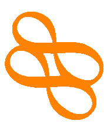
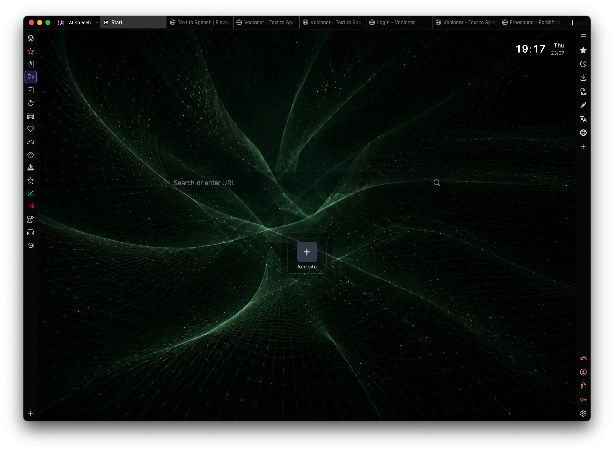
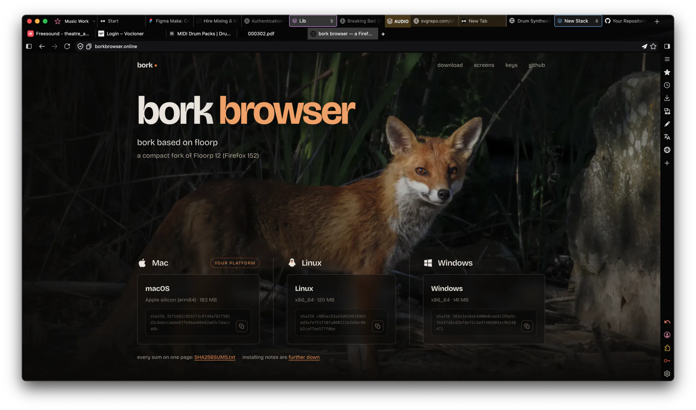
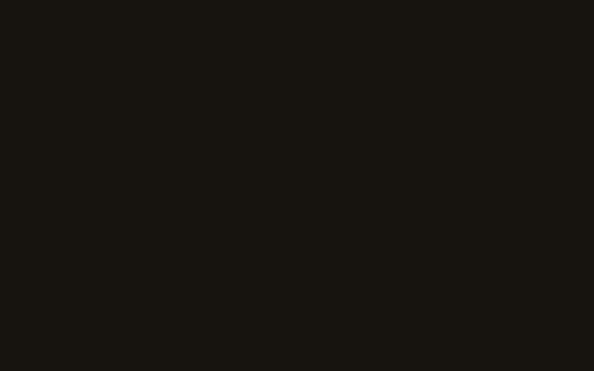
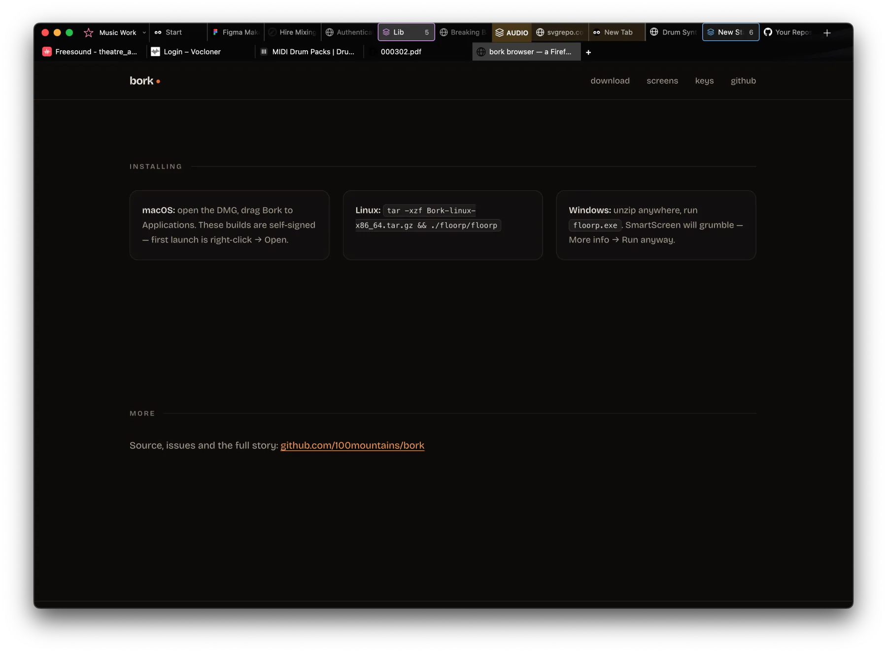
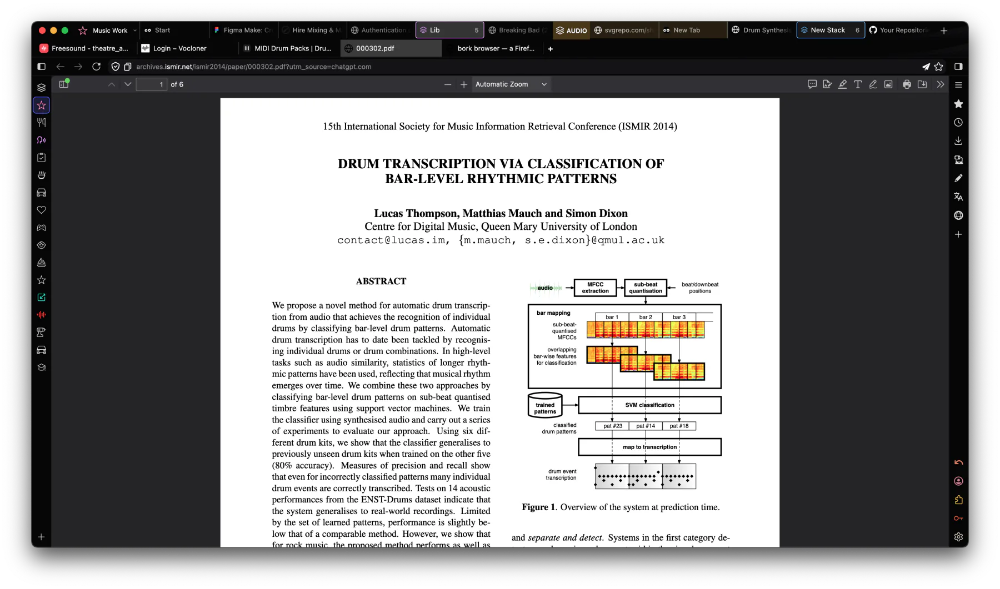

bork 1.1.52 based on floorp
a compact fork of Floorp 12 (Firefox 152)
every sum on one page: SHA256SUMS.txt installing notes are further down

Metalink support
Automatic download chunking. A .meta4 file lists every
mirror a download lives on plus its checksum, so bork pulls the
pieces from several mirrors at once — maxing out a fast line, and
rescuing a bad one by routing around whichever mirror is crawling.
The checksum is verified when it lands.
Exclusive Firefox Plugin for YouPube
SHUT UP
SHUT UP blocks channels and allows you to control youpube properly.
It adds a SHUTUP button on every video card and it blocks the
whole channel. When you SHUTUP a channel it's gone from home, search,
the sidebar and Shorts. In live chat it silences a person outright,
and a list of phrases does it for you: say one and you are gone for
good. A threads view turns the @mentions people
improvise into real replies. It is an ordinary extension: remove it
and it stays removed.
Already inside bork — this is for putting it in any other
Firefox. Add to Firefox installs it there and
then; the download is the same file if you would rather keep it and
use about:addons → the gear → Install Add-on
From File.
NO AI
No ONNX runtime, no transformers.js, no wllama, no openai.mjs, no model hub, and both MLEngine actors removed. browser.ml.enable is set to false.
No data sharing
No telemetry, no crash reports, no extra accounts, no hassling you.





Chrome's move to Manifest V3 deliberately broke full-strength content blocking. bork is built on Firefox, which still runs Manifest V2 extensions, so the complete uBlock Origin — not the declawed Lite version — keeps working exactly as it always did.
bork imports your Vivaldi workspaces, including which tabs live in which workspace — it reads Vivaldi's own session data, so a workspace with twenty tabs arrives as a workspace with twenty tabs. Passwords, bookmarks, history and cookies import too, from Vivaldi, Chrome, Edge or Safari.
bork is built to work with the chrome out of the way. These are the macOS keys:
The chrome controls sit on ⌘⌥ rather than bare keys so they cannot fire while you are typing into a page. On Windows and Linux the same controls are Ctrl+Alt — Ctrl+Alt+A, Ctrl+Alt+S, Ctrl+Alt+W, Ctrl+Alt+Z, and Ctrl+Alt+drag to move the window.
chmod +x
Bork-linux-x86_64.AppImage && ./Bork-linux-x86_64.AppImagetar -xzf
Bork-linux-x86_64.tar.gz && ./bork/borkbork.exe. SmartScreen will grumble —
More info → Run anyway.